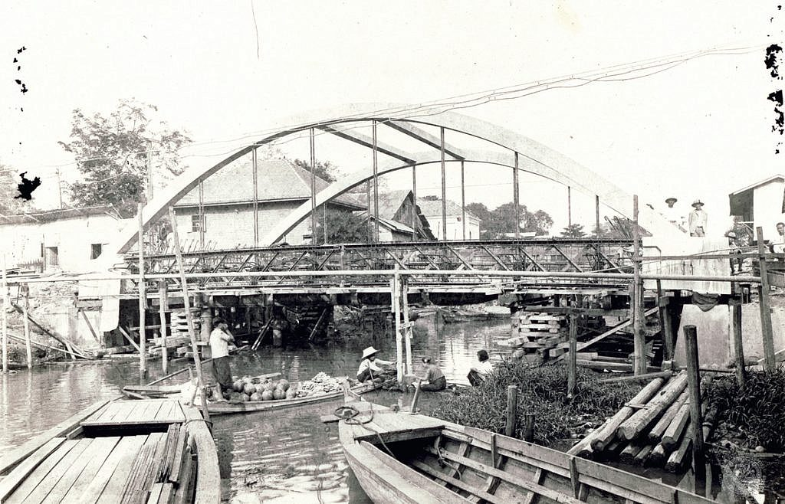

ตารางเดินเรือคลองผดุงกรุงเกษม
Khlong Phadung Krung Kasem Public Boat Timetable
คลิกที่ท่าเรือเพื่อดูรายละเอียด

คลองผดุงกรุงเกษมเป็นคลองเมืองชั้นนอกที่ขุดในสมัยพระบาทสมเด็จพระจอมเกล้าเจ้าอยู่หัวระหว่าง พ.ศ. 2394 ถึง พ.ศ. 2395 เริ่มทางทิศเหนือที่วัดสมอแครงหรือวัดเทวราชกุญชร ขนานไปกับคลองบางลำพู-โอ่งอ่าง ตัดผ่านคลองมหานาคจนกลายเป็นย่านการค้าที่สำคัญคือ สี่แยกมหานาค ผ่านวัดวัดหัวลำโพง วัดท่าเกวียนหรือวัดมหาพฤฒารามไปจนจรดแม่น้ำเจ้าพระยาทางทิศใต้ ระยะทางรวมยาว 5.5 กิโลเมตร จุดสิ้นสุดแม่น้ำเจ้าพระยา แขวงตลาดน้อย เขตสัมพันธวงศ์ และแขวงบางรัก เขตบางรัก